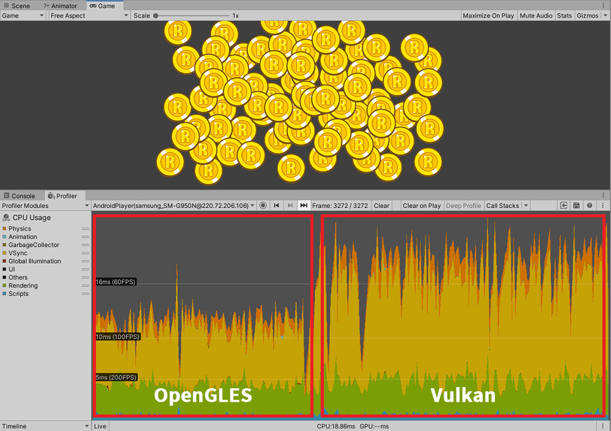
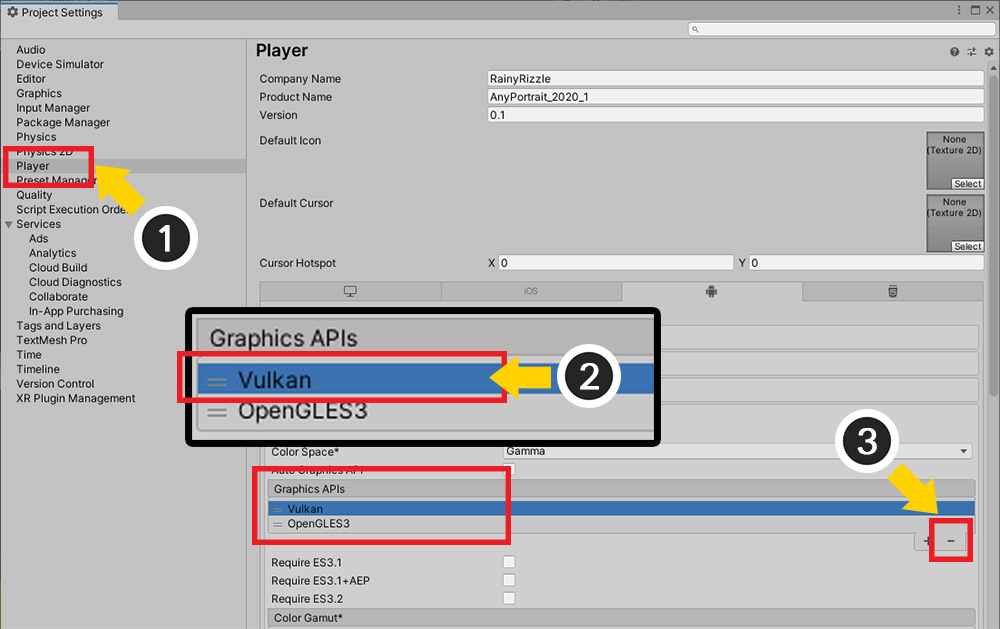
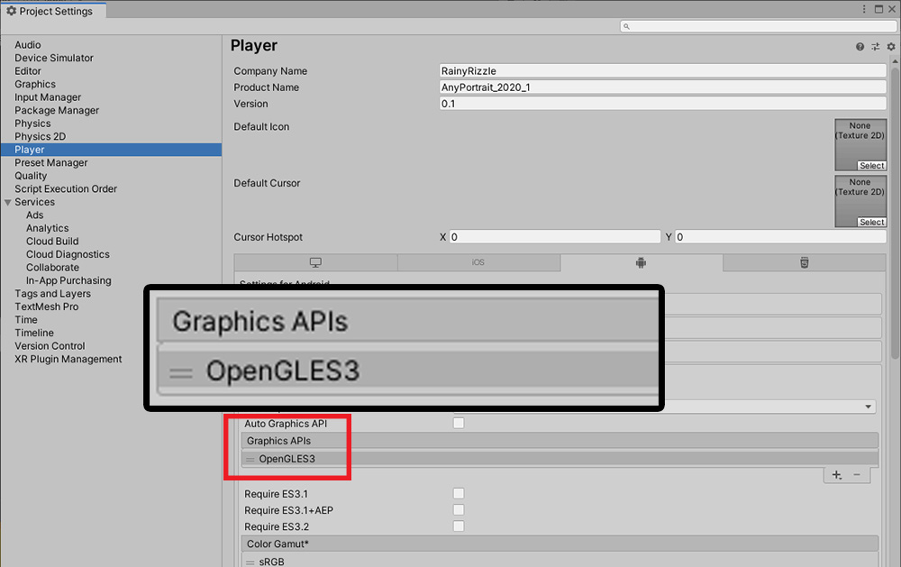

AnyPortrait > Manual > Performance issues with Vulkan
Performance issues with Vulkan
This page describes an issue where performance is degraded on some devices when building with the Android platform using Vulkan, one of the graphics APIs.
This issue is based on the results of our testing after receiving a report from a user and may not be occurred depending on the Unity version or Android version or device.
We received reports from a user that the performance was not so good that the FPS was reduced by half on the Android device "Galaxy S8".
We actually tested it on the same device, and we found out that this problem was caused by Vulkan.
The difference in performance when built using the default APIs OpenGLES and Vulkan respectively was as follows:

First, the AnyPortrait demo scene was run on the Galaxy S8 and the performance was checked using a profiler.
For scripts and rendering, you can see results in excess of 60 FPS.
However, VSync behaves strangely, and you can see that Vulkan's performance degrades significantly.
Since AnyPortrait uses the basic Surface Shader and Mesh Renderer, there is no significant difference from rendering the basic elements of Unity.
So, our team also tested a simple scene with transparent meshes.

As can be seen from the above test results, when using Vulkan, the problem of performance degradation caused by VSync occurs in common regardless of whether AnyPortrait is used or not.
We have confirmed that this problem may or may not occur depending on the device.
The only way to fix this is to disable Vulkan for now.

(1) Select Project Settings > Player.
(2) Select Vulkan and (3) delete it.

Now, it is set to only render with OpenGLES.